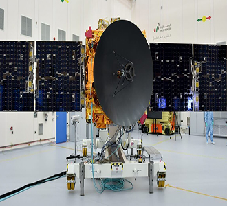

Our Events
OSIRIS-Rex
2020 October 20
First sample collection attempt from asteroid Bennu
Hayabusa2
2020 October 20
Japanese asteroid Ryugu sampling capsule returns to Earth
Solar Orbiter
2020 December 26
ESA solar mission makes first Venus flyby
Q-PACE
2020 December 31
Launch of NASA CubeSat mission to study particle collisions
CAPSTONE
2021 January
NASA lunar halo orbiter, precursor for lunar Gateway

Hope
2021 February
United Arab Emirates mission goes into Mars orbit

Tianwen 1
2021 February 21
Chinese orbiter, lander, and rover mission reaches Mars